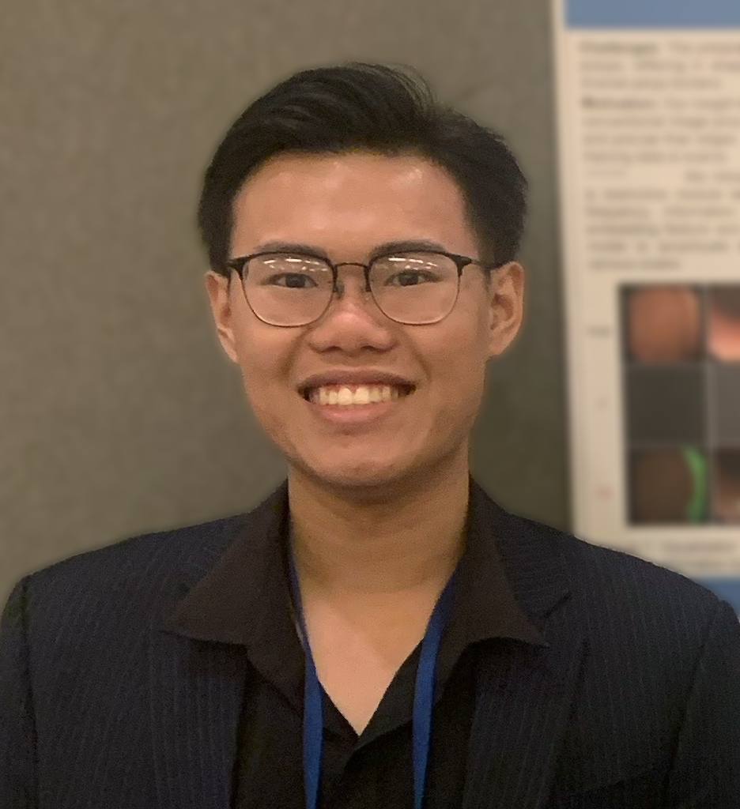

About
"True scholar is shown by phronesis, not imagination."
My name is Nhat-Tan Bui (Vietnamese: Bùi Nhật Tân). I am a Master's student at the University of Arkansas, fortunate to have Prof. Susan Gauch and Prof. Truong Nguyen as my advisors. I initially worked with Prof. Ngan Le during my first year of the master's program. I received my Bachelor's degree in Computer & Information Science at the collaboration program between the University of Science, VNU-HCM and Auckland University of Technology. I was a Research Assistant at the Software Engineering Lab (SELab) - University of Science, VNU-HCM, under the supervision of Prof. Minh-Triet Tran and Dr. Ngoc-Thao Nguyen. I am an alumnus of Le Quy Don High School, the oldest school in Saigon. All of the people mentioned are those to whom I owe a debt of gratitude.
My research concentrates on Deep Learning, Computer Vision, Vision-Language, Image & Signal Processing. Particularly, I am interested in Medical Image Analysis and Composed Image Retrieval.
I am actively looking for fully-funded Ph.D. position in Image Processing and Computer Vision starting in Fall 2026.
Note: This page is updated on Sep, 2024.
Education
Master of Science in Computer Science
University of Arkansas (UARK), 2023 - 2025
GPA: 4.00 / 4.00
Bachelor of Science in Computer & Information Science
University of Science, VNU-HCM (HCMUS) & Auckland University of Technology (AUT), 2018 - 2022
GPA: 3.84 / 4.00
Selected Publications
"Research is for curiosity and fun, though practical implications can emerge." - Zhi-Hua Zhou
Please visit my Google Scholar for full publications.
NeIn: Telling What You Don't Want
Nhat-Tan Bui, Dinh-Hieu Hoang, Quoc-Huy Trinh, Minh-Triet Tran, Truong Nguyen, and Susan Gauch
arXiv preprint arXiv:2409.06481 [pdf] [project page]
TSRNet: Simple Framework for Real-time ECG Anomaly Detection with Multimodal Time and Spectrogram Restoration Network
Nhat-Tan Bui*, Dinh-Hieu Hoang*, Thinh Phan, Minh-Triet Tran, Brijesh Patel, Donald Adjeroh, and Ngan Le
IEEE International Symposium on Biomedical Imaging (ISBI 2024), Athens, Greece [pdf] [code]
SAM3D: Segment Anything Model in Volumetric Medical Images
Nhat-Tan Bui*, Dinh-Hieu Hoang*, Minh-Triet Tran, Gianfranco Doretto, Donald Adjeroh, Brijesh Patel, Arabinda Choudhary, and Ngan Le
IEEE International Symposium on Biomedical Imaging (ISBI 2024), Athens, Greece [pdf] [code]
MEGANet: Multi-Scale Edge-Guided Attention Network for Weak Boundary Polyp Segmentation
Nhat-Tan Bui, Dinh-Hieu Hoang, Quang-Thuc Nguyen, Minh-Triet Tran, and Ngan Le
IEEE/CVF Winter Conference on Applications of Computer Vision (WACV 2024), Hawaii, USA [pdf] [code]
Teaching
Teaching Assistant
Experiences
"We can only see a short distance ahead, but we can see plenty there that needs to be done." - Alan Turing
Research Assistant at University of Arkansas, August 2023 – May 2024
Research Assistant at University of Science, VNU-HCM, April 2021 – August 2023
AI Engineer Intern at Phenikaa MaaS, December 2021 - February 2022
Xamarin Developer at BSD Solutions, July 2019 – March 2020
Awards
"In the end, when it’s over, all that matters is what you’ve done." - Alexander the Great
Department of Electrical Engineering and Computer Science Fellowship, UARK 2025
The Reginald R. ‘Barney’ & Jameson A. Baxter Graduate Fellowship, UARK 2024
Rank 1st place team at OS-MN40 dataset in Open-Set 3D Object Retrieval track, SHREC 2022
Rank 3rd place team at OS-MN40-Miss dataset in Open-Set 3D Object Retrieval track, SHREC 2022
Rank 1st place team in Visual Sentiment Analysis task, MediaEval 2021
Distinctive Academic Performance, HCMUS & AUT 2019 - 2021
Services
Program Committee:
Conference Reviewer:
Journal Reviewer: